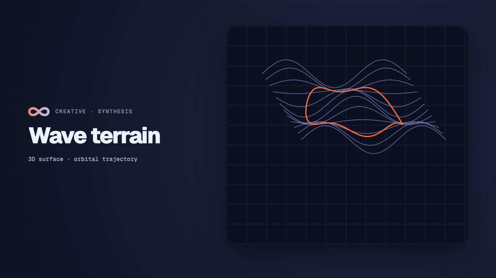

Creative
Wave terrain synthesis: audio from 3D surfaces
How wave terrain synthesis works: orbital trajectories, 3D surfaces, discrete Fourier transform anti-aliasing, and patching audio-visual synths in Infinite.

on this page
- What is wave terrain synthesis
- The mathematics of wave terrains: functions and image rasters
- Kinematic scanning: orbital trajectories in two dimensions
- Eliminating aliasing: discrete Fourier transform mip levels
- Polyphony, unison voicing, and filtering
- Patching wave terrain synthesis in Infinite
- Sound design recipes: evolving drones, aggressive bass, and ambient pads
- Summary and exploration
Wave terrain synthesis is one of the most expressive, mathematically elegant methods for generating sound from visual geometry. Instead of reading through one-dimensional wavetables or computing traditional trigonometric oscillator formulas, a wave terrain synthesiser treats sound generation as a particle travelling across a three-dimensional topographic landscape.
As an orbital trajectory scans across the contours, ridges, and valleys of this surface at audio rates, the instantaneous height of the terrain produces an acoustic waveform. When the landscape shifts or the trajectory rotates, the harmonic spectrum morphs continuously, producing organic timbres that range from acoustic woodwinds to evolving crystalline drones.
Although conceptualised decades ago by researchers including Mitsuhashi and Curtis Roads, real-time wave terrain synthesis remained rare in traditional digital audio workstations. The technique requires simultaneous high-resolution two-dimensional image processing and sample-accurate numerical audio digital signal processing. In Infinite, audio synthesis and computer graphics share a single execution graph, making native wave terrain synthesis available directly on the modular canvas.
Here is an analysis of how wave terrain synthesis operates, the mathematics of two-dimensional orbital scanning, how discrete Fourier transform mip pyramids eliminate Nyquist aliasing, and how to patch an audio-visual wave terrain instrument using native nodes.

What is wave terrain synthesis
Traditional wavetable synthesis reads through a sequence of one-dimensional periodic arrays: $s(t) = W(\phi(t))$, where $\phi(t)$ represents the normalised phase accumulator advancing from zero to one. While wavetable position modulation allows timbral movement, the sound remains constrained to a linear path through pre-recorded cycles.
Wave terrain synthesis expands this concept into two spatial dimensions. A two-dimensional terrain function $z = T(u, v)$ defines a continuous surface over the normalised coordinate plane $(u, v) \in [0, 1] \times [0, 1]$. An orbital path generator computes a closed two-dimensional trajectory $(u(t), v(t))$ that repeats at the fundamental frequency $f_0$ of the played musical note:
s(t) = T(u(t), v(t))The resulting audio waveform $s(t)$ depends on two independent factors:
- The topography of the terrain: The static shape or dynamic motion of the surface $T(u, v)$, including its gradients, crests, and saddle points.
- The geometry of the orbit: The shape, scale, centre offset, and orientation of the path $(u(t), v(t))$ traced across the surface.
This decoupling gives sound designers two distinct modulation axes. Modulating the orbit changes the harmonic balance and formant character of each note. Modulating the underlying terrain changes the underlying timbre and physical presence of the entire patch.
The mathematics of wave terrains: functions and image rasters
In mathematical theory, a wave terrain can be defined by explicit continuous equations, such as polynomials, sums of sine products, or saddle functions:
T(u, v) = cos(2π u) · sin(2π v) + 0.5 · sin(4π (u + v))In modular creative coding environments like Infinite, terrains can also be derived directly from dynamic image textures. Video feeds, procedural noise, reaction-diffusion simulations, and generative pixel shaders can all serve as live wave terrains.
When an image texture supplies the terrain, the continuous coordinate $(u, v)$ must be sampled from a discrete raster of pixels with width $W$ and height $H$. To prevent steppy, noisy distortion when the orbit moves between discrete pixel centres, the synthesiser applies bilinear interpolation:
fx = u · W - 0.5
fy = v · H - 0.5
x0 = floor(fx), x1 = x0 + 1
y0 = floor(fy), y1 = y0 + 1
tx = fx - x0
ty = fy - y0
T(u, v) = (1 - tx)(1 - ty)c00 + tx(1 - ty)c10 + (1 - tx)ty c01 + tx ty c11Here, $c_{00}, c_{10}, c_{01}, c_{11}$ represent the scalar values extracted from the four nearest neighbouring pixels. In Infinite's Wave Terrain node, the wtChan parameter determines how multi-channel colour data maps to surface elevation:
- Luminance: Computes perceived brightness using standard colourimetric weighting: $0.299 R + 0.587 G + 0.114 B$. Smooth gradients produce warm, rounded harmonic spectra.
- Red, green, blue, and alpha: Solos a single colour channel. Useful when complex multi-pass shaders encode distinct mathematical data into separate colour channels.
- Edge magnitude: Computes the absolute gradient from median luminance: $|Luminance - 0.5| \times 2.0$. This mode isolates high-contrast boundaries in textures, generating bright, metallic overtones with punchy attacks.
Because texture coordinates wrap periodically, orbital paths that exceed the unit boundary seamlessly loop around the terrain edges without clicks or discontinuity.
Kinematic scanning: orbital trajectories in two dimensions
The path $(u(t), v(t))$ determines which contours of the terrain are read during each audio cycle. For a note with fundamental frequency $f_0$, the normalised phase $t$ advances across $[0, 1)$ at rate $f_0 / f_s$, where $f_s$ is the audio sampling rate (typically 48,000 Hz).
Infinite provides five distinct orbital geometries, each offering unique harmonic characteristics:
1. Elliptical orbits (kOrbitCircle)
The simplest trajectory is an ellipse centred at $(c_x, c_y)$ with radii $(r_x, r_y)$ and phase offset $\phi$:
u(t) = cx + rx · cos(2π t)
v(t) = cy + ry · sin(2π t + 2π φ)When $r_x = r_y$ and $\phi = 0$, the orbit traces a circle. Increasing or decreasing the radii scales the amplitude of modulation across the terrain, acting similarly to the modulation index in frequency modulation synthesis. Small radii inspect local, gentle slopes, yielding warm sine-like tones. Large radii traverse steep peaks and troughs, producing complex spectra rich in high-order harmonics.
2. Lissajous figures (kOrbitLissajous)
Lissajous trajectories introduce harmonic ratio multipliers $\text{ratioA}$ and $\text{ratioB}$ on the horizontal and vertical axes:
u(t) = cx + rx · sin(2π t · ratioA + 2π φ)
v(t) = cy + ry · sin(2π t · ratioB)When $\text{ratioA}$ and $\text{ratioB}$ form integer proportions such as 3:2, 4:3, or 5:4, the orbit loops through intricate figure-eight and braided geometries. Because the path revisits different parts of the terrain at sub-harmonic intervals, Lissajous orbits generate vocal formants and bell-like inharmonic overtones reminiscent of complex wavefolding.
3. Lemniscate of Bernoulli (kOrbitLemniscate)
The lemniscate traces a continuous infinity loop across the terrain:
denom = 1 + sin²(2π t)
u(t) = cx + rx · cos(2π t) / denom
v(t) = cy + ry · sin(2π t) · cos(2π t) / denomThe lemniscate features an inflection point at the centre of the loop where velocity reaches its maximum. When scanned across a non-linear terrain, this velocity profile creates rich acoustic asymmetry, producing hollow, woody resonances similar to acoustic clarinets and bowed strings.
4. Archimedean spirals (kOrbitSpiral)
The spiral trajectory expands outwards over multiple rotations before cycling:
rFactor = 0.2 + 0.8 · t
u(t) = cx + rx · rFactor · cos(2π t · turns)
v(t) = cy + ry · rFactor · sin(2π t · turns)Spirals cross concentric contours, generating sweeping spectral motion even on static terrains.
5. Scanline rasterisation (kOrbitScanline)
The scanline orbit sweeps linearly across the horizontal axis while stepping the vertical coordinate across discrete frames. This produces biting, digital wavetable-style timbres ideal for aggressive basslines.
Eliminating aliasing: discrete Fourier transform mip levels
A major challenge in wave terrain synthesis is digital aliasing. When an orbit traces across sharp cliffs, high-frequency noise, or steep gradients on a terrain, the resulting waveform $s(t)$ contains harmonics that can extend far beyond the Nyquist limit ($f_s / 2 = 24,000\text{ Hz}$). Without band-limiting, these harmonics fold back across the Nyquist threshold, creating unmusical, harsh intermodulation distortion.
To solve this, Infinite's real-time digital signal processing engine uses a Cooley-Tukey Radix-2 fast Fourier transform (FFT) pipeline with an exact 10-level mip pyramid.
The 1024-point Radix-2 FFT pipeline
During preparation, the synthesiser pre-samples the selected orbit across 8 morph frames into 1024-sample wavetable buffers. Each buffer undergoes a forward discrete Fourier transform:
// Forward Cooley-Tukey Radix-2 FFT (N = 1024)
Radix2FFT::Instance().Forward(realBuffer, imagBuffer);Once in the frequency domain, the spectrum consists of 512 discrete harmonic bins. The engine computes 10 band-limited mip levels, where each successive level halves the maximum allowable harmonic index:
- Mip 0: Contains all 512 harmonics. Used for low bass notes ($20\text{ Hz} - 90\text{ Hz}$) where the 512th harmonic remains below 24,000 Hz.
- Mip 1: Band-limited to 256 harmonics ($90\text{ Hz} - 180\text{ Hz}$).
- Mip 2: Band-limited to 128 harmonics ($180\text{ Hz} - 370\text{ Hz}$).
- Mip 3: Band-limited to 64 harmonics ($370\text{ Hz} - 750\text{ Hz}$).
- ...
- Mip 9: Band-limited to a single fundamental harmonic (pure sine wave) for high soprano registers above 10,000 Hz.
For each mip level, harmonics above the cutoff threshold are zeroed out, and an inverse FFT reconstructs a clean, alias-free time-domain cycle:
Radix2FFT::Instance().Inverse(realBuffer, imagBuffer);During real-time voice rendering, the audio engine calculates the exact continuous pitch of the note, determines the fractional mip level, and blends between the two adjacent mip tables using cubic Hermite interpolation. This guarantees more than 80 dB of aliasing suppression across all 8 octaves of the keyboard.
Polyphony, unison voicing, and filtering
The Wave Terrain node in Infinite includes full performance architecture built into the DSP engine:
8-voice polyphony
The node maintains eight independent polyphonic voices. Each voice tracks its own MIDI note number, note frequency, phase accumulator, and four-stage ADSR envelope (attack, decay, sustain, release). When a chord is played, each voice samples the terrain at its own independent playback speed, preserving harmonic clarity across complex intervals.
Unison detuning and stereo spreading
For thick lead sounds and wide ambient textures, the engine supports up to 8 unison sub-voices per note:
- Detune: Spreads unison voice frequencies apart by up to 100 cents using calibrated logarithmic detune curves.
- Stereo width: Pans unison voice pairs symmetrically across the stereo field from -1.0 (hard left) to +1.0 (hard right).
Multi-mode resonant filter
After terrain evaluation and unison summing, the signal passes into an internal state-variable filter. The filter offers 12 dB, 24 dB, and 36 dB slopes in lowpass, highpass, bandpass, and notch modes, controllable via cutoff, resonance, and drive.
Patching wave terrain synthesis in Infinite
Connecting a wave terrain synthesiser on Infinite's canvas takes less than a minute. Because image cables, note cables, and audio cables all coexist on the same workspace, visual and acoustic nodes link directly together.
[Reaction-Diffusion] (texture) ──> (texture) [Wave Terrain] ──> [Audio Out]
▲
[Keyboard / Sequencer] (notes) ───────────┘Step 1: Add the terrain source
Add a generative visual node to supply the landscape:
- Press
Shift+Aand select Visuals > Reaction-Diffusion. - Set the algorithm parameters to generate organic Turing patterns:
feed = 0.054,kill = 0.062. - Adjust the simulation speed to 0.25 so the visual patterns slowly pulse and drift over time.
Step 2: Add the Wave Terrain synthesiser
- Press
Shift+Aand select Synths > Wave Terrain. - Connect the
out(picture) pin of Reaction-Diffusion to thetextureinput of Wave Terrain. - Set
wtOrbitto Lemniscate. - Set
wtChanto Luminance. - Set
unisonto 3 anddetuneto 14 cents for subtle chorus movement.
Step 3: Trigger notes and monitor output
- Press
Shift+Aand select Notes > Keyboard (or Random Note Generator for automated generative playback). - Connect the
noteoutput to thenoteinput of Wave Terrain. - Connect the
audiooutput of Wave Terrain to anAudio Outnode.
When you play notes, you will hear a rich, resonant tone. As the reaction-diffusion pattern morphs on the canvas, the acoustic timbre shifts in tandem.
Example patch file
Infinite saves patches in human-readable plain text .inf files. Here is the starting patch:
infinite-patch 1
rev 2
node 1 Visuals Reaction-Diffusion
id rdiff
pos 120 240
param feed 0.054
param kill 0.062
end
node 2 Notes Keyboard
id keys
pos 120 440
end
node 3 Synths Wave Terrain
id wt
pos 420 300
param wtOrbit 2
param wtChan 0
param radiusX 0.45
param radiusY 0.45
param unison 3
param detune 14
param cutoff 8500
end
node 4 Audio Audio Out
id out
pos 740 300
end
cable rdiff texture -> wt texture
cable keys notes -> wt note
cable wt audio -> out inSound design recipes: evolving drones, aggressive bass, and ambient pads
Here are three practical production recipes using the Wave Terrain engine:
1. Organic morphing drone
- Terrain source:
Noise nodewith simplex noise and slow octaves evolution. - Orbit:
kOrbitLemniscatewithradiusX = 0.65,radiusY = 0.40. - Modulation: Connect a slow sine
LFO(0.08 Hz) to therotationparameter of Wave Terrain. - Filter: 24 dB lowpass with
cutoff = 3200 Hzand subtle resonance. - Character: As the rotation rotates the infinity loop across the noise field, the harmonic overtone balance shifts without sudden timbre jumps, creating an evolving drone suitable for film scoring.
2. Aggressive industrial Reese bass
- Terrain source: High-contrast geometric shapes from a
ShapeorGlitchnode. - Orbit:
kOrbitLissajouswithratioA = 3.0,ratioB = 2.0, andwtChan = Edge Magnitude. - Unison: 5 voices,
detune = 28 cents,stereoWidth = 0.85. - Filter: 24 dB lowpass with moderate
driveto saturate the summed unison output. - Character: The edge detection mode reads hard transitions as intense harmonic spikes. Coupled with the 3:2 Lissajous trajectory and unison detuning, this produces a ferocious, roaring bass sound with distinctive stereophonic movement.
3. Shimmering ambient glass pad
- Terrain source: Live video feed from a webcam or liquid video loop via
Video. - Orbit:
kOrbitSpiralwithradiusX = 0.85,radiusY = 0.85. - Envelope:
attack = 1200 ms,release = 2400 ms. - Modulation: Route the high-frequency band from an
Audio Analyze nodeback intoradiusX, creating an acoustic feedback loop where brightness opens the spatial scan. - Character: Delicate, shimmering, crystalline pads that breathe dynamically in response to room sound and video luminance.
Summary and exploration
Wave terrain synthesis transforms the relationship between visual graphics and electronic sound. By viewing sound synthesis as spatial kinematics across topographic surfaces, artists can design instruments that are visually expressive and sonically complex.
With built-in 1024-point discrete Fourier transform anti-aliasing, eight-voice polyphony, and unison spreading, Infinite makes wave terrain synthesis reliable for live performance and studio composition.
Explore ready-to-run wave terrain patches in the Infinite Library, inspect the full control specifications in the Wave Terrain node documentation, or download Infinite to start sculpting sound from two-dimensional landscapes.